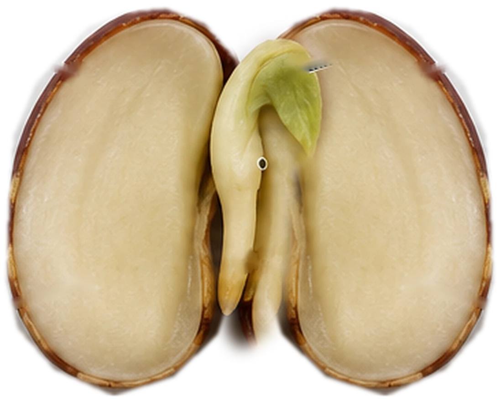
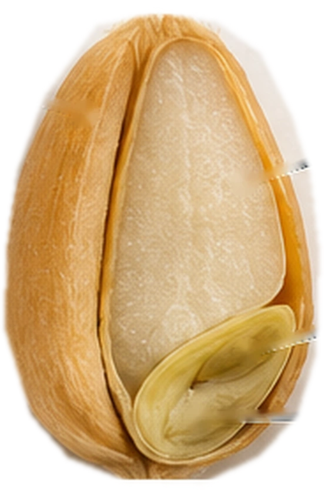

Рассмотрите научные схемы, найдите части семян и откройте объяснения к своим ответам. Проверять себя можно на каждом этапе.
01 / Начало исследования
Исследовательский вопрос
◎
Представьте, что перед вами увеличенные изображения семени фасоли и зерновки пшеницы. Изучайте строение, делайте предположения и сверяйте их с объяснениями.
Наша задача: выяснить, какие части входят в строение семени двудольного и однодольного растения, и определить, где сохраняются запасы питательных веществ.
Здесь можно ошибиться: исследование нужно как раз для проверки предположения.
Сначала попробуйте ответить самостоятельно. Здесь важно рассуждение, а не готовая формулировка.
Например: «У фасоли две семядоли, а у пшеницы одна. Возможно, питательные вещества хранятся в разных частях».
Работайте последовательно или переходите между этапами.
02 / Объект № 1
Семя фасоли
◒
Фасоль — двудольное растение. На авторской иллюстрации показано вскрытое семя: две семядоли раздвинуты, чтобы был виден зародыш. Нажимайте на номера прямо на изображении.
Сухое семяПлотное, сравнительно небольшое
Набухшее семяВпитало воду и увеличилось в размерах
Если исследовать настоящее семя: на его вогнутой стороне можно найти рубчик — след прикрепления к семяножке, а рядом — маленькое отверстие, семявход. В увеличенной схеме ниже показано уже внутреннее строение.
Один из верных ответов: семя впитало воду, стало крупнее, а его кожура размягчилась. Благодаря набуханию внутренние части легче рассмотреть.
Продольная схема · фасольНажмите на цифру на изображении, чтобы выбрать ответ

Нажмите на номер на изображении и определите соответствующую часть семени.
Задание 1. Подпишите части семени
Задание 2. В какой части зрелого семени фасоли находится основной запас питательных веществ?
03 / Объект № 2
Зерновка пшеницы
◓
Пшеница — однодольное растение. Рассмотрите схематический продольный разрез зерновки. Её большая внутренняя часть заполнена питательной тканью — эндоспермом, а зародыш расположен у основания, сбоку.
Научная точность: зерновка — сухой односемянный плод. Её околоплодник плотно сросся с семенной кожурой, поэтому в практикуме мы различаем зерновку (плод) и находящееся внутри семя.
Продольная схема · зерновка пшеницыНажмите на номер, чтобы выбрать ответ

На увеличенной иллюстрации различимы основные области зерновки. Отдельные структуры зародыша пшеницы малы, поэтому здесь они объединены в обозначение «Зародыш».
Сначала определите наружный покров, затем запасную ткань и зародыш.
Задание 3. Подпишите части зерновки
Задание 4. Почему зерновку пшеницы правильнее называть плодом, а не просто семенем?
04 / Анализ результатов
Что общего и в чём различия?
≋
Заполните таблицу, опираясь на проведённые наблюдения. Сначала сравните количество семядолей, затем запас питательных веществ и наружные покровы.
Задание 5. Сравнительная таблица
Признак
Фасоль
Пшеница
Задание 6. В какой структуре у пшеницы находится основной запас питательных веществ?
05 / Научный вывод
Объясните результаты
✎
Напишите свой вывод, а затем откройте примеры для самопроверки. Ваши формулировки могут отличаться — главное, чтобы смысл был верным.
Подсказка к рассуждению: вспомните наружный покров, зародыш и питательные вещества.
Возможный ответ: В обоих объектах есть зародыш, наружные защитные покровы и запас питательных веществ. У зародыша можно различить почечку, стебелёк и корешок.
Возможный ответ: У фасоли две семядоли, у пшеницы — одна (щиток). У фасоли основной запас находится в семядолях, у пшеницы — в эндосперме. У зерновки пшеницы плодовая оболочка срослась с семенной кожурой.
Возможный ответ: Зародыш даёт начало новому растению. Запас питательных веществ поддерживает его на первых этапах роста, пока проросток не сможет самостоятельно получать необходимые вещества.
Как себя проверить: есть ли в вашем объяснении мысль о зародыше, семядолях и запасе питательных веществ? Если смысл совпадает с примером, ответ можно считать верным, даже если слова другие.
06 / Применяем знания
Научные загадки
✧
Вы изучили внутреннее строение семян. Теперь попробуйте объяснить две ситуации из жизни растений. После каждого выбора можно открыть подробное объяснение.
Загадка 1. Можно ли только по размеру семени точно определить, на какую глубину его нужно посеять?
Загадка 2. В описанном исследовательском случае семена томата прорастали после прохождения через пищеварительную систему галапагосских черепах. Какая гипотеза лучше объясняет это?
Итог исследования: у фасоли две семядоли и запас веществ находится преимущественно в них; у пшеницы одна семядоля (щиток), а основной запас содержится в эндосперме. И у фасоли, и у пшеницы есть зародыш, из которого развивается новое растение.
✳
Исследование завершено
Можно вернуться к любому этапу, изменить ответы и ещё раз прочитать объяснения.